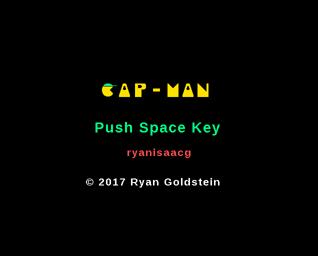

AUVM (Gold Virtual Machine)
mov =0 R0
mov =0 R1
mov =1 R2
lbl =0
add =48 R2 R3
wto R3
add R1 R2 R4
mov R2 R1
mov R4 R2
add =1 R0 R0
cmp R0 =5
brnng =0
wto =10
end
The AUVM was my high school senior project. It defines a virtual machine, an assembler, and a basic (incomplete) LISP. The program snippet above will print the ASCII values of the first 5 Fibonacci numbers using the assembler from the project.
Cosmic Circuitry

A roguelike video game for a school assignment that requires players to use Kirchoff's Laws to solve circuit puzzles
RusHour
CapMan
A twist on a popular arcade game where the player has to consider gravity
Fwum
func incr(a $i32) void {
$a = $a + 1;
}
func main(argc i32, argv $$i8) i32 {
a := 0;
incr(@a);
if a > 0 {
printf("POSITIVE");
} else if a < 0 {
printf("NEGATIVE");
}
return 0;
}
A small programming language I created that compiles to C
XCLM: X-Platform C Library Manager
$ xclm list
$ pwd
/C/Users/ryan/Downloads/SDL2-2.0.5/
$ xclm install sdl2
$ xclm list
sdl2
$ cd ../SDL2-2.0.7/
$ xclm update sdl2
A utility I wrote mostly for MinGW and Git Bash that allows sytem-wide installation of C libraries, but will work on any Unix-like system
BasicStego
$ #Put some image in image.png
$ cat "Hello world!" &gr; test.txt
$ java -jar BasicStego.jar encode
image.png text.txt
$ java -jar BasicStego.jar decode
image.png out.txt
$ cat out.txt
A program that demonstrates stegonography: the practice of hiding information in images. It creates a binary string out of a Java string and then sets the RGBA values to even or odd, depending if each bit is on or off. This can be reversed, retrieving the information.